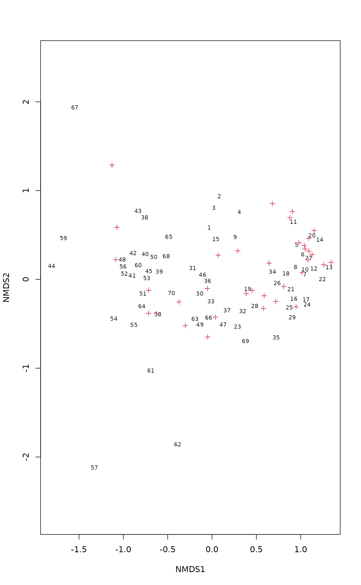
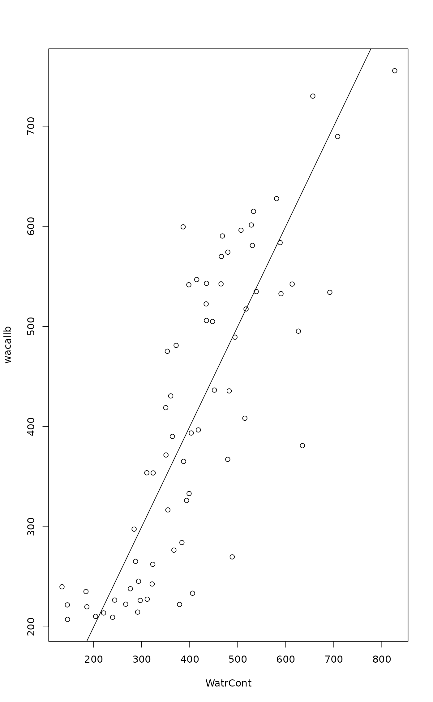

wascores.RdComputes Weighted Averages scores of species for ordination configuration or for environmental variables.
wascores(x, w, expand=FALSE) eigengrad(x, w)
| x | Environmental variables or ordination scores. |
|---|---|
| w | Weights: species abundances. |
| expand | Expand weighted averages so that they have the same weighted variance as the corresponding environmental variables. |
Function wascores computes weighted averages. Weighted averages
“shrink”: they cannot be more extreme than values used for
calculating the averages. With expand = TRUE, the function
“deshrinks” the weighted averages by making their biased
weighted variance equal to the biased weighted variance of the
corresponding environmental variable. Function eigengrad
returns the inverses of squared expansion factors or the attribute
shrinkage of the wascores result for each environmental
gradient. This is equal to the constrained eigenvalue of
cca when only this one gradient was used as a
constraint, and describes the strength of the gradient.
Function wascores returns a matrix where species define rows
and ordination axes or environmental variables define columns. If
expand = TRUE, attribute shrinkage has the inverses of
squared expansion factors or cca eigenvalues for the
variable. Function eigengrad returns only the shrinkage
attribute.
data(varespec) data(varechem) vare.dist <- vegdist(wisconsin(varespec)) vare.mds <- monoMDS(vare.dist) vare.points <- postMDS(vare.mds$points, vare.dist) vare.wa <- wascores(vare.points, varespec) plot(scores(vare.points), pch="+", asp=1)## Omit rare species (frequency <= 4) freq <- apply(varespec>0, 2, sum) plot(scores(vare.points), pch="+", asp=1)## Works for environmental variables, too. wascores(varechem, varespec)#> N P K Ca Mg S Al #> Callvulg 25.12401 41.66188 246.92383 572.3431 99.40828 49.10552 245.15751 #> Empenigr 21.61371 44.17350 158.92517 580.8403 89.20628 35.75327 107.05670 #> Rhodtome 22.34553 40.35530 162.31108 643.8819 95.07712 30.84303 28.83159 #> Vaccmyrt 24.96352 49.80649 189.70177 656.4179 96.75529 34.55190 32.75705 #> Vaccviti 21.14028 45.86984 162.12372 613.2126 94.30084 37.26975 116.14656 #> Pinusylv 18.37299 44.24818 163.60195 670.9387 93.52214 37.02238 150.45523 #> Descflex 22.24089 54.74804 212.20357 771.0159 114.15179 38.00000 24.64143 #> Betupube 21.51034 28.86552 112.28276 513.5586 75.15172 23.55172 33.12414 #> Vacculig 28.00729 33.48758 114.90230 372.9653 70.89954 29.32378 202.89008 #> Diphcomp 22.34228 39.71049 127.44259 446.1565 80.16173 32.32963 122.31574 #> Dicrsp 21.33007 60.03758 185.04563 828.0544 148.67509 46.75427 90.42294 #> Dicrfusc 23.45681 39.14575 162.91954 578.2309 77.81648 33.48086 60.66890 #> Dicrpoly 20.65446 43.87409 150.51485 665.5845 115.22112 36.17079 90.16733 #> Hylosple 26.10599 67.88980 245.78681 779.6520 111.96685 42.27433 24.92738 #> Pleuschr 22.60476 54.22534 199.96241 712.6278 109.23425 40.01132 70.43900 #> Polypili 23.17377 43.75902 144.82623 724.9738 85.42623 30.58525 145.73115 #> Polyjuni 22.89480 47.98022 154.81906 643.3864 87.27819 33.63863 53.24888 #> Polycomm 21.73521 41.17042 154.91549 631.8704 101.84789 32.17324 46.80986 #> Pohlnuta 19.99885 48.59198 169.68855 678.3813 104.31641 39.94427 132.05458 #> Ptilcili 21.27880 33.44211 127.08522 564.5652 85.96417 27.11720 56.60692 #> Barbhatc 21.17461 27.93323 113.13542 497.9138 77.50564 23.72288 42.09749 #> Cladarbu 23.56127 38.04952 142.03073 454.9019 74.00779 33.81002 173.12698 #> Cladrang 24.28421 38.60534 135.31177 463.2750 70.54209 32.53349 183.79979 #> Cladstel 19.28049 46.71060 158.00576 540.4904 80.19153 40.29106 225.89526 #> Cladunci 21.41240 45.49844 163.40402 621.9100 98.35538 40.00734 119.59481 #> Cladcocc 21.72473 42.80681 156.32330 557.9007 80.95448 36.25161 149.82616 #> Cladcorn 22.11640 47.06656 160.36881 623.5185 95.17781 36.75273 104.71463 #> Cladgrac 22.51887 44.06576 156.50214 583.1558 94.10292 36.93930 134.13424 #> Cladfimb 21.77980 41.82652 153.29444 512.4646 78.28232 35.62323 128.96061 #> Cladcris 20.88795 44.12262 171.04016 574.5672 92.52169 38.24003 116.03507 #> Cladchlo 19.51207 45.39655 150.93190 571.0233 95.77586 39.50862 156.81983 #> Cladbotr 22.97660 38.89574 167.20000 590.8021 99.57234 34.79362 87.75957 #> Cladamau 25.07143 35.84286 105.07857 395.2214 68.18571 27.11429 95.91429 #> Cladsp 19.21923 47.37308 168.49231 526.7654 79.54423 45.15385 215.33846 #> Cetreric 21.00944 47.76972 165.07972 579.6322 99.14944 42.25472 163.46000 #> Cetrisla 18.36552 42.73695 151.78374 626.2813 89.77833 35.33498 132.68227 #> Flavniva 18.56110 61.18194 207.67705 502.9203 60.91755 50.22532 396.82405 #> Nepharct 23.33099 49.10019 146.84715 618.1601 64.27319 29.95760 31.72300 #> Stersp 28.19743 32.84800 94.33459 389.5143 53.25377 24.22175 95.39326 #> Peltapht 21.08553 54.45395 193.38816 886.5487 119.35132 37.92500 106.16447 #> Icmaeric 28.88636 27.00000 87.86818 307.0500 40.48182 22.17273 89.94091 #> Cladcerv 20.25000 56.79000 192.36000 519.2300 62.10000 45.18000 314.92000 #> Claddefo 22.19198 45.22981 167.73069 583.7983 92.01320 38.51369 100.46139 #> Cladphyl 15.73750 54.56875 180.39375 775.4500 99.65625 43.35000 208.55000 #> Fe Mn Zn Mo Baresoil Humdepth pH #> Callvulg 75.457843 52.38247 8.281074 0.4734635 27.241036 2.187819 2.845108 #> Empenigr 38.146102 53.49357 7.159938 0.3289657 27.324317 2.367439 2.888078 #> Rhodtome 5.560906 70.48260 7.444100 0.2251490 37.325030 2.689154 2.895352 #> Vaccmyrt 5.589213 75.17221 7.838533 0.2666732 31.404171 2.798935 2.855216 #> Vaccviti 37.586067 51.81515 7.617213 0.3680289 26.307701 2.307879 2.923128 #> Pinusylv 39.121898 35.22311 7.733333 0.3485401 17.762968 1.996350 3.049148 #> Descflex 6.066429 110.87232 9.526607 0.2316071 22.740179 2.834821 2.822857 #> Betupube 5.417241 37.53448 5.637931 0.2068966 51.496552 2.527586 2.979310 #> Vacculig 93.963929 37.73062 4.593824 0.3780552 21.410710 2.041196 3.006965 #> Diphcomp 73.281173 46.88025 4.593827 0.3725309 31.836574 2.103704 2.856790 #> Dicrsp 22.504617 65.35020 13.060765 0.5610370 23.182889 2.232247 2.954272 #> Dicrfusc 13.922252 61.40958 6.922859 0.3218816 26.918674 2.484399 2.806431 #> Dicrpoly 20.973927 33.28779 9.110561 0.3892739 37.304043 2.228713 3.015842 #> Hylosple 4.729157 115.14606 9.885976 0.2851996 20.956264 2.925000 2.807594 #> Pleuschr 19.113811 77.12277 9.007860 0.3405945 24.584979 2.596881 2.858446 #> Polypili 51.993443 36.74754 8.045902 0.2204918 17.368852 1.493443 3.227869 #> Polyjuni 12.885704 82.56274 7.945126 0.2760289 28.116303 2.615523 2.874729 #> Polycomm 7.895775 68.22535 7.843662 0.2591549 38.687324 2.926761 2.860563 #> Pohlnuta 33.089313 42.02290 8.452290 0.3935115 24.709351 2.147328 2.985496 #> Ptilcili 14.036188 33.93547 5.906924 0.2303712 48.941884 2.502498 2.973376 #> Barbhatc 8.199687 31.11379 5.550784 0.2084639 54.331975 2.514734 2.986834 #> Cladarbu 65.470394 38.28429 6.387500 0.4464046 22.592997 2.048540 2.937879 #> Cladrang 76.612752 34.86010 6.616452 0.3903501 17.270158 1.799128 3.022346 #> Cladstel 84.639467 33.27903 7.287216 0.4054879 9.854042 1.851973 3.052167 #> Cladunci 27.463504 40.10322 9.108102 0.5120114 28.312376 2.362687 2.858564 #> Cladcocc 46.653763 43.53584 7.269176 0.3698925 19.972222 2.025090 2.974194 #> Cladcorn 32.916238 53.38441 7.518489 0.3639871 26.620868 2.399518 2.890997 #> Cladgrac 45.758366 44.63911 7.702724 0.4244163 25.546654 2.230350 2.933658 #> Cladfimb 41.710354 47.83687 6.815152 0.3887626 24.763889 2.239394 2.902778 #> Cladcris 34.729585 44.75984 6.933735 0.3746988 29.711352 2.400000 2.841633 #> Cladchlo 42.089655 35.13276 7.908621 0.3814655 22.319655 2.075000 3.022414 #> Cladbotr 23.374468 46.54255 7.263830 0.3106383 45.725532 2.580851 2.904255 #> Cladamau 68.971429 41.98571 4.928571 0.3214286 27.592857 1.857143 2.914286 #> Cladsp 47.913462 49.61923 8.421154 0.6173077 16.864423 2.213462 2.921154 #> Cetreric 42.614167 36.96694 9.516389 0.5687500 21.452639 2.058056 2.923889 #> Cetrisla 29.617734 33.24138 7.518227 0.3192118 26.417980 2.027586 3.065025 #> Flavniva 94.339916 37.03232 9.116371 0.9987764 19.692312 1.799241 2.923629 #> Nepharct 12.910837 115.15684 7.743536 0.2180608 23.135932 2.541065 2.918251 #> Stersp 30.226998 31.97061 7.635502 0.2828767 15.844007 1.477740 3.038756 #> Peltapht 37.598684 56.64079 7.652632 0.2046053 28.321053 2.286842 3.026316 #> Icmaeric 24.236364 23.95909 6.618182 0.2863636 18.727273 1.568182 2.968182 #> Cladcerv 111.090000 52.04000 8.530000 0.6800000 15.393000 1.870000 2.900000 #> Claddefo 25.116325 48.81105 7.599609 0.4096285 33.814545 2.468133 2.823656 #> Cladphyl 50.475000 35.28125 8.568750 0.2812500 7.728125 1.575000 3.231250## And the strengths of these variables are: eigengrad(varechem, varespec)#> N P K Ca Mg S Al #> 0.13000842 0.18880078 0.16246365 0.15722067 0.16359171 0.13391967 0.29817406 #> Fe Mn Zn Mo Baresoil Humdepth pH #> 0.20766831 0.27254480 0.16783834 0.09542514 0.20931501 0.25051326 0.14583161